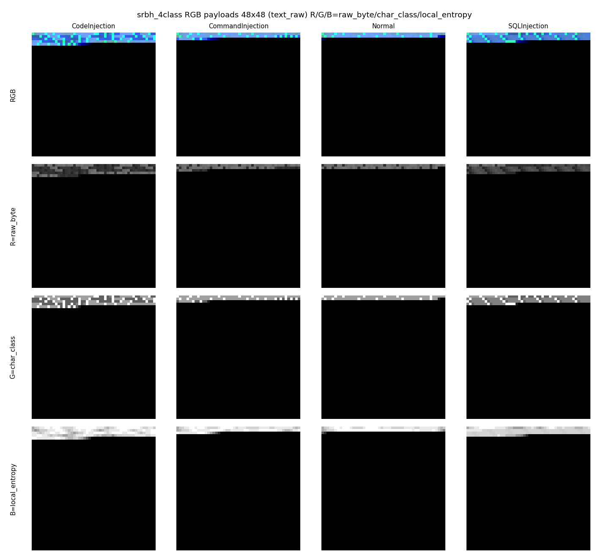
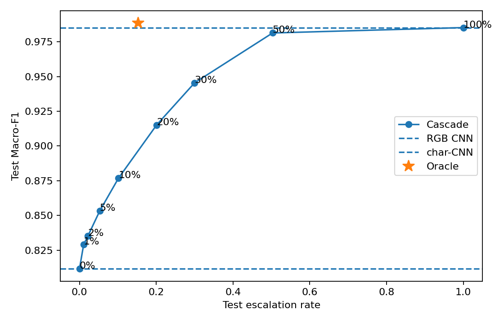
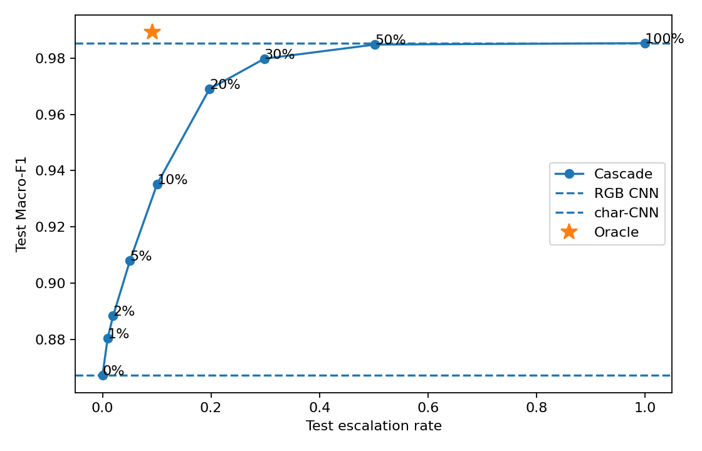

I. 서론
웹 애플리케이션 방화벽(web application firewall, WAF)에 기계학습 탐지기를 붙이려면 정확도와 함께 요청 하나를 처리하는 데 드는 시간을 따져야 한다. 탐지기는 모든 요청의 경로 위에 놓이므로, 정확한 모델이라도 느리면 서비스 지연으로 바로 이어진다. 보안 분야 기계학습 평가에서 실험 조건과 배포 조건이 어긋나 결과가 과장되는 문제는 이미 여러 차례 지적되었다[1].
본 연구는 원래 다음 질문에서 출발하였다. 악성코드 바이너리를 이미지로 바꾸어 분류하는 방법[2]처럼, 웹 공격 요청을 바이트 이미지로 바꾼 CNN이 텍스트 기반 모델과 비슷하거나 더 나은 성능을 내는가(Q1). 답은 “아니오”였다. 48×48×3 이미지를 입력으로 받는 얕은 CNN(이하 RGB CNN)은 문자 수준 CNN(이하 char-CNN)보다 Macro-F1이 유의하게 낮았다(V장 5.1절). 이 결과를 감추거나 질문을 바꾸지 않고 그대로 보고한다.
다만 RGB CNN은 char-CNN보다 가볍다. 두 모델은 같은 요청을 서로 다른 표현(2차원 바이트 배치와 1차원 문자열)으로 보므로 틀리는 요청도 다르다. 여기서 두 번째 질문이 나왔다. 값싼 RGB CNN이 모든 요청을 먼저 판정하고 확신도가 낮은 요청만 char-CNN으로 넘기면(이하 캐스케이드), char-CNN 수준의 정확도를 더 낮은 비용으로 얻을 수 있는가(Q2). 공개 페이로드 모음을 쓴 이전 실험에서는 그렇게 보였다. 요청의 8%만 넘기고도 Macro-F1은 char-CNN에 0.2%p 뒤졌을 뿐이며 지연은 5.07배 낮았다.
이 수치는 두 가지 이유로 다시 측정할 필요가 있었다. 첫째, 이전 데이터셋의 공격 표본은 페이로드 문자열만으로 이루어져 표면 토큰만으로도 분류가 거의 포화되어 있었다. 둘째, 5.07배는 GPU에서 512개씩 묶어 처리한 값이다. 요청이 하나씩 들어오는 WAF 환경, 그리고 대부분의 요청이 정상인 배포 환경에서도 같은 이득이 나는지는 확인되지 않았다. 캐스케이드의 넘김 판단(이하 게이트)이 얼마나 정확한지도 따로 따져야 한다. 확신도만 보는 게이트는 2차 모델이 그 요청을 맞힐지 알지 못한다[11].
본 논문은 실트래픽 기반 SR-BH 2020 데이터셋[6]에서 이 두 가지를 측정한다. 기여는 다음과 같다.
- 본 연구의 바이트 이미지 인코딩과 얕은 CNN이 텍스트 모델에 진다는 음성 결과를 두 데이터셋에서 통계 검정과 함께 보고하고, 캐스케이드가 이 결과에서 파생된 설계임을 밝힌다. 이와 함께 캐스케이드의 속도–정확도 교환을 장치 2종 × 배치 크기 4종과 공격 비율 3종에서 다시 측정한다. 이전 데이터셋의 5.07배는 SR-BH에서 요청 단위 CPU 처리와 배포 공격 비율일 때 1배 아래로 떨어지며, 그 원인이 정상 요청의 과다 넘김에 있음을 보인다. 이 넘김은 게이트가 아니라 1차의 학습 방식으로 줄었다(0.99배 → 1.42배, 순전파 지연 기준).
- 확신도 게이트가 이상적 라우터보다 몇 배 더 넘기는지(과잉 넘김 배율)를 5-fold 교차검증으로 측정하고, 신호 교체·클래스별 임계값·1차 내부 표현을 쓰는 학습형 라우터 어느 것도 측정 전에 정한 기준을 충족하지 못했음을 보인다. 또한 게이트를 시험 집합의 넘김률로만 평가하면 배포 조건의 속도를 거꾸로 판단할 수 있음을 실측으로 보이고, 정상 요청 넘김률과 공격 비율 재가중 배수를 함께 보고하는 평가 방식을 제안한다. 넘김에 쓰는 수치 자체를 1차 내부 표현의 거리 점수로 바꾼 경우도 MSP보다 나빴고(1차 오답 탐지 AUROC 0.20~0.87 대 0.94), 실사용자 트래픽에서는 검증 집합 기반 배포 배수가 낙관적임을 보인다.
모든 판정 기준(대표 운영점 규칙, 헤드라인 측정 조건, 1차 학습 방식과 게이트 개선의 채택 기준)은 측정 전에 버전 관리되는 연구 기록에 고정하였다(커밋 039d7d4, b0202f4). 기준에 없던 비교는 탐색적 결과로 구분해 적는다. 1차 확신 오답의 라벨 감사(5.7절)는 대형 언어모델 1인 판정이라 보조 증거로만 쓴다.
II. 관련 연구
2.1 이미지 기반 보안 탐지
Nataraj 등[2]은 악성코드 바이너리의 바이트를 회색조 이미지로 그려 계열을 분류하였다. 이후 소스코드를 이미지로 바꾸어 취약점을 찾는 연구[3], 어셈블리 명령의 구문 정보를 RGB 채널에 나누어 담는 연구[4]로 이어졌다. 본 연구의 RGB 채널 구성은 이 두 계열을 따른다.
2.2 텍스트 기반 웹 공격 탐지
웹 공격 탐지는 대부분 요청 문자열을 직접 다룬다. Tadhani 등[5]은 CNN과 LSTM을 결합해 XSS와 SQL 삽입을 탐지하였다. SR-BH 2020[6]은 실제 웹 서버에 들어온 요청에 CAPEC 기반 다중 라벨을 붙인 데이터셋으로, 공개 페이로드 모음과 달리 요청 전체(URI, 본문, 헤더)를 담는다.
2.3 캐스케이드와 넘김 판단
Wang 등[7]은 사전학습된 모델을 확신도 임계값으로 잇기만 해도 같은 정확도에서 큰 모델보다 수 배 빠르다는 것을 보였다. 웹 공격 탐지에서도 Tasdemir 등[8]은 가벼운 1차 모델과 BERT 2차 모델의 캐스케이드로 약 20배의 속도 향상을 보고하였고(SQL 삽입 단일 공격, 비교 기준은 BERT 단독), 2단 구성의 WAF 탐지기[9]와 실시간 제로데이 탐지 캐스케이드[10]도 제안되었다. 이들 수치는 2차 모델과 측정 조건이 서로 달라 직접 비교할 수 없다.
넘김 규칙은 일반 기계학습에서 별도로 연구되었다. 최대 소프트맥스 확률(maximum softmax probability, MSP)은 오분류 탐지의 기준선이다[12]. 선택적 분류는 1차 모델의 기각을 위험–커버리지 교환으로 다루고[13], 넘김 학습(learning to defer)은 뒤의 결정자를 고려해 넘길 대상을 학습한다[14][15]. Kag 등[16]은 엣지 모델과 라우터를 함께 학습해 서버 모델이 맞힐 어려운 예제만 보냈다. Jitkrittum 등[11]은 최적 넘김 규칙이 두 모델의 정답 확률 차이에 달려 있으므로 1차 확신도만 보는 규칙은 2차의 정오를 알 수 없고, 2차가 일부 입력에만 강하거나 라벨에 잡음이 있을 때 실패한다는 것을 보였다. 본 연구의 학습형 라우터는 이 분석이 권하는 대로 “1차는 틀리고 2차는 맞는가”를 직접 예측한다. Enomoto와 Eda[17]는 일반적인 확률 보정이 캐스케이드에서는 오히려 해로울 수 있음을 보고하였다. 조기 종료 신경망[18]은 한 모델 안에서 같은 발상을 쓴다.
2.4 지연과 측정 조건
Hong 등[19]은 입력을 조작해 조기 종료를 막는 지연 유발 공격을 보였다. 캐스케이드의 비용이 입력에 따라 달라진다는 점에서 본 연구의 넘김률 분석과 맞닿는다. 추론 성능은 질의를 하나씩 처리하는지, 묶어서 처리하는지에 따라 크게 달라지므로, MLPerf Inference[20]는 시나리오별로 따로 측정한다. 침입 탐지에서는 공격의 기저 비율이 낮을수록 오경보가 지배적이 된다는 기저율 문제[21]가 오래전에 지적되었다. 본 연구는 이 문제를 캐스케이드 지연과 게이트 평가에 적용한다.
III. 방법
3.1 요청의 이미지 변환
요청에서 URI와 본문을 이어 붙인 바이트열 b의 앞 2,304바이트를 48×48 격자에 행 우선으로 배치한다. 짧은 요청은 0으로 채운다.
세 채널에는 같은 위치의 다른 정보를 담는다. R은 원래 바이트 값, G는 문자 종류(영문·숫자·특수문자 등), B는 그 위치 주변 n-gram의 지역 엔트로피이다. 이전 데이터셋에서 1채널 회색조를 3채널로 바꾸었을 때 정확도가 올랐고, 채널 조합 사이의 차이는 유의하지 않았다. 변환 예는 Fig. 1과 같다. SR-BH의 요청은 대부분 짧다(중앙값 96바이트, 99백분위 353바이트). 격자에서 채워지는 행 수의 중앙값은 2줄이고, 픽셀의 약 95%가 패딩이다.

3.2 1차·2차 모델과 1차 학습 방식
1차 RGB CNN은 합성곱 3단(32·64·128 채널, 배치 정규화, ReLU, 최대 풀링)과 전역 평균 풀링, 완전연결층으로 이루어지며 파라미터는 93,988개이다. 2차 char-CNN은 같은 바이트열을 1차원 문자 시퀀스로 받는다. 바이트(257개 기호, 패딩 포함)를 64차원으로 임베딩하고, 커널 크기 3·5·7의 1차원 합성곱(각 128채널)과 시간축 최대 풀링을 거쳐 완전연결층으로 분류한다. 입력은 2,304바이트로 패딩하며 파라미터는 141,252개이다. 두 모델은 각각 따로 학습하며, 캐스케이드는 학습된 두 모델을 추가 학습 없이 잇는다. 따라서 캐스케이드가 줄이는 것은 추론 비용뿐이고 학습 비용은 두 모델의 합이다.
SR-BH는 클래스가 크게 불균형하다(Table 1). 1차는 두 방식으로 학습해 비교한다. (가) 언더샘플링: 학습 집합의 각 클래스를 가장 작은 클래스(CmdI, 3,886행)에 맞춰 무작위로 줄여 15,544행으로 학습한다. (나) 클래스 가중치: 학습 집합 186,157행을 모두 쓰고 손실에 클래스 빈도의 역수에 비례하는 가중치를 준다. 2차 char-CNN은 두 경우 모두 (가)로 학습한 같은 모델을 써서 1차의 효과만 분리한다.
3.3 캐스케이드와 확신도 게이트
1차 모델의 클래스 확률을 p1(k|x), 확신도를 s(x) = maxk p1(k|x)라 할 때 캐스케이드의 예측은 다음과 같다.
임계값 τ는 검증 집합에서 넘김 예산 b(넘길 요청의 비율)에 해당하는 확신도 분위수로 정하고, 시험 집합에는 한 번만 적용한다. τ→0이면 RGB CNN 단독, τ→1이면 char-CNN 단독과 같다. 이 단일 임계값 게이트를 B0라 부른다.
3.4 과잉 넘김 배율
이상적 라우터(오라클)는 1차가 틀리는 요청만 넘긴다. 그 넘김률을 eo, 게이트가 2차 단독 Macro-F1에 도달하는 데 필요한 최소 넘김률을 eg라 하면 과잉 넘김 배율은 다음과 같다.
ρ=1이면 게이트가 오라클만큼 효율적이고, ρ가 클수록 1차가 맞힌 요청을 불필요하게 넘긴다.
3.5 지연과 공격 비율
요청 하나의 1차·2차 지연을 t1, t2, 넘김률을 r이라 하면 캐스케이드의 기대 지연과 char-CNN 단독 대비 속도 배수 S는 다음과 같다. 학습형 라우터를 쓰면 그 지연 tg를 t1에 더한다.
넘김률은 정상 요청(rN)과 공격 요청(rA)에서 다르다. 공격 비율이 π 인 환경의 넘김률은 다음과 같이 다시 가중한다.
배포 환경의 공격 비율은 시험 집합(74.8%)보다 훨씬 낮으므로, π ∈ {74.8%, 3.3%, 0.1%} 에서 S를 함께 보고한다. 3.3%는 Tasdemir 등[8]이 쓴 기저 비율이고, 0.1%는 공격이 드문 환경을 나타내는 가정값이다. π가 작으면 r(π)는 rN에 수렴한다. 식 (5)는 rN, rA가 π와 무관하다고, 즉 정상·공격 요청 각각의 분포는 그대로이고 비율만 바뀐다고 가정한다. 본 연구의 rN은 스캐너가 대부분인 정상 요청에서 추정한 값이므로, 실사용자 트래픽에서는 달라질 수 있다.
3.6 예측 클래스별 임계값
단일 τ는 클래스마다 다른 확신도 분포를 하나의 기준으로 자른다. 예측 클래스 c마다 임계값 τc를 두어 다음과 같이 넘긴다(이하 G2).
τc는 검증 집합에서 탐욕적으로 고른다. 넘김을 검증 행의 0.5% 단위로 늘리되, 매 단계 네 클래스 가운데 다음 0.5%를 넘겼을 때 검증 Macro-F1이 가장 높아지는 클래스에 배정한다. 이 탐색은 검증 목적함수에 대한 탐욕적 근사이며, 4차원 전수 탐색의 최적을 보장하지 않는다.
3.7 학습형 라우터
Jitkrittum 등[11]의 분석에 따르면 넘길 가치가 있는 요청은 “1차는 틀리고 2차는 맞는” 요청이다. 이를 표적 z(x) = 1[h1(x) ≠ y ∧ h2(x) = y]로 두고, 넘김 점수 g(x) = P(z=1|φ(x))를 로지스틱 회귀로 학습한다. 점수가 높은 순서로 넘기며, 임계값은 B0와 같은 규칙으로 정한다. 특징 φ는 두 가지이다.
- G3-lite(11차원): 1차 확률 4개, MSP, 상위 두 확률의 차, 원문 통계 5개(로그 바이트 길이, 특수문자·%·숫자의 비율, 2,304바이트 초과 여부). 원문 통계는 1차 확률에 없는 정보를 2차를 돌리지 않고 얻는다.
- G3-full(139차원): G3-lite에 1차의 전역 평균 풀링 출력(128차원)을 더한다. 1차를 이미 돌렸으므로 추가 추론이 없다.
라우터는 검증 집합에서만 학습한다. 같은 점수로 임계값까지 고르면 과적합되므로, 검증 집합을 라벨 층화로 둘로 나누어 한쪽에서 학습한 라우터의 점수를 다른 쪽에 매기는 교차 적합을 하고, 시험 점수는 두 라우터의 평균을 쓴다. 특징 계산과 두 내적을 포함한 라우터의 요청당 CPU 지연은 G3-lite 0.018ms, G3-full 0.024ms 였다.
3.8 특징 공간 거리 기반 넘김 점수
MSP와 그 변형(온도 보정 MSP, 상위 두 확률의 차, 엔트로피)은 모두 1차 확률 p1의 함수이므로, p1이 가진 정보를 넘을 수 없다. 넘김에 쓰는 수치 자체가 맞지 않는지 확인하려고, 확률이 아니라 1차의 내부 표현 z(x)(전역 평균 풀링 출력, 128차원)에서 재는 점수 네 개를 문헌에서 그대로 가져왔다(새 점수를 만들지 않았다). 참조 집합은 그 1차를 학습한 학습 행의 표현과 라벨이며, 점수가 클수록 넘긴다.
- maha[25]: 클래스 평균과 공유 공분산(Ledoit–Wolf 수축)으로 잰 최소 마할라노비스 거리.
- rmaha[26]: 위 거리에서 학습 표현 전체의 단일 가우시안까지의 거리를 뺀 상대 마할라노비스 거리.
- knn[27]: L2 정규화 표현에서 클래스마다 2,000행을 뽑은 참조 뱅크까지의 50번째 최근접 거리.
- trust[28]: 예측 클래스 뱅크까지의 최근접 거리에 대한 다른 클래스 뱅크까지의 최근접 거리의 비(신뢰 점수)의 음수.
임계값과 운영점은 B0와 같은 규칙으로 정한다. 3.4절의 과잉 넘김 배율은 시험 집합의 공격 비율에서 잰 값이라 배포 속도와 방향이 어긋날 수 있으므로(5.6절), 이 비교의 1차 지표는 식 (5)의 배포 재가중 넘김률 Eπ = r(π = 3.3%)로 측정 전에 정하였다. 판정 기준은 교차검증에서 B0 대비 Eπ 20% 이상 감소, 대응표본 검정의 Holm 보정(4쌍) p<0.05, Macro-F1 손실 0.3%p 이하, 점수 계산 지연 0.035ms(1차의 10%) 이하이며, 고정 분할에서도 Eπ 차이의 부트스트랩 신뢰구간 상한이 0 미만이어야 개선으로 쓴다.
IV. 실험 환경
4.1 데이터셋
주 데이터셋은 SR-BH 2020[6]이다. 원본 907,815행의 CAPEC 라벨을 정상(Normal), SQL 삽입(SQLi), 코드 삽입(CodeInjection), 명령 삽입(CmdI) 4클래스로 대응시키고, 자체 시그니처 감사로 라벨이 의심되는 30,280행, 같은 입력에 다른 라벨이 붙은 행, 완전 중복을 제거하여 265,939행을 얻었다. CodeInjection은 XSS가 아니라 서버 측 PHP 코드 삽입 탐침이 대부분이다. SR-BH의 라벨은 요청 전체(헤더 포함)에 ModSecurity CRS 3.3.0을 탐지 전용으로 적용한 뒤 수작업 검토를 거쳐 붙여진 것이다[6]. 반면 본 연구의 입력은 URI와 본문뿐이므로, 헤더에만 근거가 있는 라벨은 입력에서 관찰할 수 없다. 쿠키를 더한 입력은 RGB CNN의 Macro-F1을 올렸지만, 쿠키 값을 같은 길이의 무의미한 문자로 지운 입력과의 차이를 검출하지 못해(Holm 보정 p=0.17) 이득의 출처(내용 대 길이·존재)를 판정할 수 없었다. 따라서 더 단순한 URI·본문 입력을 유지하였다. 70/15/15 층화 분할(seed 42)이다(Table 1).
Table 1. SR-BH 2020 track after cleaning (rows per split)
| Split | Normal | SQLi | CodeInj. | CmdI | Total |
|---|---|---|---|---|---|
| Train | 46,864 | 128,502 | 6,905 | 3,886 | 186,157 |
| Validation | 10,042 | 27,537 | 1,480 | 832 | 39,891 |
| Test | 10,042 | 27,536 | 1,480 | 833 | 39,891 |
SR-BH의 정상 요청은 대부분 취약점 스캐너의 탐색 요청이다. 중복 제거 후 97.8%가 스캐너 사용자 에이전트를 달고 있고, 실사용자 에이전트만 있는 정상 요청은 645개(시험 집합 95개)이다. 따라서 정상 요청 오탐률(FPR)은 스캐너 트래픽 기준의 값이며, 실사용자 층의 오탐 수를 함께 적는다. 비교를 위해 이전 실험의 데이터셋(공개 SQLi·XSS·CmdI 페이로드 모음과 CSIC 2010 정상 트래픽, 이하 이전 데이터셋)의 결과도 병기한다.
4.2 평가 절차
평가 지표는 Macro-F1, FPR 1%에서의 탐지율(TPR@1%FPR), 정상 요청 FPR이다. 게이트 비교의 주 판정(V장 5.4·5.5절)은 시험 집합을 건드리지 않도록 학습+검증 풀 226,048행을 5-fold로 나눈 교차검증에서 수행하였다. 각 fold에서 1차(클래스 가중치)와 2차는 같은 학습·검증 분할을 쓰고, 임계값·온도·라우터는 fold의 검증 부분에서 정하며, 평가는 fold의 시험 부분에서 한다. 속도–정확도 곡선(5.2절)과 게이트의 확인 실험(5.6절)은 고정 분할의 시험 집합에 한 번 적용하였다.
지연은 모델의 순전파만 재며, 이미지·시퀀스 변환 같은 전처리 시간은 포함하지 않는다. 2차 char-CNN은 모든 요청을 2,304바이트로 패딩한 고정 길이 입력으로 잰다. 클래스 편향을 피하려고 무작위로 뽑은 대표 배치를 쓰며, 조건마다 한 번 측정하였다. 장치는 GPU(RTX 4080 SUPER)와 CPU(8 스레드), 배치 크기는 1·32·128·1024이다. 헤드라인 조건은 측정 전에 CPU·배치 1로 고정하였다. 요청이 하나씩 들어오는 WAF 환경에 가장 가깝고, MLPerf의 단일 스트림 시나리오[20]에 해당한다. 두 모델의 구조는 1차 학습 방식과 무관하므로 두 구성에 같은 지연 측정값을 쓴다. 배치가 1보다 클 때 캐스케이드 지연은 식 (4)의 근사이다.
대표 운영점은 검증 Macro-F1이 char-CNN 단독의 검증 Macro-F1에서 0.5%p 이내로 들어오는 가장 작은 넘김 예산으로 정하였다. 측정 전에 정한 판정 기준은 다음과 같다. (1) 운영점의 헤드라인 속도 배수가 2배에 못 미치면 속도 이득을 “조건부”로 낮춘다. (2) 1차 학습 방식은 클래스 가중치 구성이 π=3.3% 헤드라인 배수를 언더샘플링 구성보다 20% 이상 높이고(1.19배 이상) 운영점 Macro-F1 손실이 0.3%p 이하이면 권장 구성으로 바꾼다. (3) 교차검증의 게이트 개선은 B0 대비 과잉 넘김 배율 20% 이상 감소와 p<0.05를 모두 만족해야 채택한다. (4) 고정 분할의 확인 실험은 B0 대비 시험 넘김률 5%p 이상 감소, 부트스트랩(2,000회) 95% 신뢰구간 상한 0 미만, Macro-F1 손실 0.3%p 이하를 채택 기준으로 하였다.
V. 실험 결과
5.1 이미지 단독 탐지(Q1)
SR-BH 교차검증에서 RGB CNN의 Macro-F1은 0.8949±0.0140, char-CNN은 0.9884±0.0037 이었다(5-fold 대응표본 t-검정 p<0.001). 고정 분할의 시험 집합에서도 RGB CNN은 학습 방식에 따라 0.8118(언더샘플링)과 0.8672(클래스 가중치)로, char-CNN의 0.9853에 크게 못 미친다. 이전 데이터셋에서는 차이가 작았지만(0.9804 대 0.9954) 방향은 같았고 교차검증에서 유의하였다. 적어도 본 연구의 행 우선 바이트 배치와 얕은 CNN으로는 두 데이터셋 모두에서 이미지 단독 탐지가 텍스트 모델을 대체하지 못한다. 다른 이미지 배치나 더 깊은 모델에 대한 결론은 아니다.
5.2 넘김 예산과 1차 학습 방식에 따른 속도–정확도 교환
Table 2와 Fig. 2는 넘김 예산에 따른 시험 집합 성능이다. 예산을 늘리면 Macro-F1이 단조롭게 오르고 곡선의 양 끝은 두 단독 모델과 일치한다. 1차를 언더샘플링으로 학습하면 대표 운영점 규칙을 처음 만족하는 예산이 50%였다(시험 0.9814). 이전 데이터셋에서 8%만 넘기면 되던 것과 크게 다르다. 클래스 가중치로 학습한 1차는 단독 Macro-F1이 0.8118에서 0.8672로, 정상 FPR이 9.38%에서 3.74%로 좋아졌고, 운영점이 30%(시험 0.9798)로 내려왔다. 같은 예산에서 비교하면 30%일 때 0.9455 대 0.9798, 20%일 때 0.9152 대 0.9690이다.
Table 2. Cascade performance on the SR-BH test split by deferral budget for two first-stage training schemes (τ chosen on validation; second stage is the same char-CNN)
| Budget | First stage: undersampled | First stage: class-weighted | ||||||
|---|---|---|---|---|---|---|---|---|
| Deferred | Macro-F1 | Normal FPR | Real-user FP | Deferred | Macro-F1 | Normal FPR | Real-user FP | |
| 0% (RGB CNN) | 0.00% | 0.8118 | 9.38% | 8/95 | 0.00% | 0.8672 | 3.74% | 6/95 |
| 5% | 5.29% | 0.8534 | 6.84% | 7/95 | 5.06% | 0.9080 | 2.32% | 5/95 |
| 10% | 10.17% | 0.8769 | 4.94% | 6/95 | 10.08% | 0.9353 | 1.48% | 5/95 |
| 20% | 20.10% | 0.9152 | 2.72% | 6/95 | 19.71% | 0.9690 | 1.03% | 6/95 |
| 30% | 29.98% | 0.9455 | 1.65% | 5/95 | 29.84% | 0.9798 | 0.90% | 7/95 |
| 50% | 50.30% | 0.9814 | 0.94% | 5/95 | 50.21% | 0.9848 | 0.79% | 5/95 |
| 100% (char-CNN) | 100% | 0.9853 | 0.78% | 5/95 | 100% | 0.9853 | 0.78% | 5/95 |
| Oracle | 15.33% | 0.9886 | – | – | 9.16% | 0.9892 | – | – |
Bold: operating point (smallest budget whose validation Macro-F1 is within 0.5 pp of the char-CNN).

(a) Undersampled first stage

(b) Class-weighted first stage
두 구성 모두 운영점에서 정상 요청이 공격 요청보다 더 많이 넘겨졌다. 언더샘플링 구성은 rN=70.7%, rA=43.4%(실제 라벨 기준 CmdI 83.7%, SQLi 43.8%, CodeInjection 13.7%), 클래스 가중치 구성은 rN=39.5%, rA=26.6%(CmdI 61.2%, SQLi 26.8%, CodeInjection 2.2%)였다. 1차 학습 방식을 바꾸자 정상 넘김이 31%p 줄었다. 실사용자 층 오탐은 5/95와 7/95로, 표본이 95개뿐이라 두 구성과 char-CNN 단독(5/95)을 구별할 수 없다.
5.3 배포 조건별 지연
Table 3은 두 구성의 운영점에서 장치·배치별 속도 배수이다. 언더샘플링 구성은 헤드라인 조건(CPU·배치 1)에서 1.22배, 공격 비율 3.3%에서 0.99배로 char-CNN 단독보다 느려진다. 식 (5)에서 π가 작아지면 넘김률이 rN=70.7%에 가까워지기 때문이다. 클래스 가중치 구성은 같은 조건에서 1.63배와 1.42배로, 측정 전에 정한 1차 학습 방식의 채택 기준(1.19배 이상, Macro-F1 손실 0.3%p 이하; 손실 0.16%p)을 충족하여 이후 권장 구성으로 삼는다. 다만 헤드라인 배수는 여전히 기준 2배에 못 미쳐 속도 이득은 “조건부”로 보고한다. 이득의 출처는 지연이 아니라 넘김률이다. 같은 지연에 넘김률만 39.1%(π=3.3%)로 바뀌었다.
Table 3. Per-request latency (ms) and cascade speedup S over the stand-alone char-CNN at each operating point, by device, batch size, and attack rate π
| Device · batch | RGB CNN | char-CNN | Undersampled first stage (50.3%) | Class-weighted first stage (29.8%) | ||||
|---|---|---|---|---|---|---|---|---|
| π=74.8% | π=3.3% | π=0.1% | π=74.8% | π=3.3% | π=0.1% | |||
| CPU · 1 (headline) | 0.350 | 1.114 | 1.22 | 0.99 | 0.98 | 1.63 | 1.42 | 1.41 |
| CPU · 32 | 0.132 | 0.901 | 1.54 | 1.18 | 1.17 | 2.25 | 1.86 | 1.85 |
| CPU · 128 | 0.125 | 1.024 | 1.60 | 1.22 | 1.21 | 2.38 | 1.95 | 1.93 |
| CPU · 1024 | 0.165 | 1.725 | 1.67 | 1.26 | 1.25 | 2.54 | 2.05 | 2.04 |
| GPU · 1 | 0.209 | 0.235 | 0.72 | 0.63 | 0.63 | 0.84 | 0.78 | 0.78 |
| GPU · 32 | 0.0081 | 0.0374 | 1.39 | 1.09 | 1.08 | 1.94 | 1.65 | 1.64 |
| GPU · 128 | 0.0040 | 0.0699 | 1.79 | 1.32 | 1.31 | 2.81 | 2.23 | 2.21 |
| GPU · 1024 | 0.0080 | 0.0634 | 1.59 | 1.21 | 1.20 | 2.35 | 1.93 | 1.92 |
Latencies from a single measurement shared by both configurations (same architectures). A separate run of the class-weighted configuration under a busier CPU gave 1.67× and 1.45× at the headline condition.
GPU·배치 1 에서는 두 모델 모두 커널 실행 오버헤드가 지배적이라 캐스케이드가 char-CNN 단독보다 느리다. 넘김이 0%일 때의 상한은 CPU·배치 1에서 t2/t1=3.18배이다. 이전 데이터셋의 13.6배는 GPU 처리량 비라 측정 조건이 달라 직접 비교할 수 없고, SR-BH 에서도 GPU·배치 128과 1024의 지연 비는 17.5배와 7.9배이다. 즉 상한을 낮춘 것은 데이터셋보다 요청 단위 CPU 처리라는 조건이다. 배치를 키우면 2차의 상대 비용이 커져 배수가 오르고, 클래스 가중치 구성은 GPU·배치 128에서 시험 비율 2.81배, π=3.3%에서 2.23배에 이른다. 이전 데이터셋의 5.07배(GPU·배치 512)와 가장 가까운 조건(GPU·배치 1024)에서 SR-BH의 배수는 1.59배와 2.35배이다.
5.4 확신도 신호 교체(게이트 한계)
운영점이 크게 밀린 원인이 게이트 신호에 있는지 확인하려고, MSP를 온도 보정 MSP(msp_T)[22], 상위 두 확률의 차(margin), 엔트로피로 바꾸어 교차검증에서 과잉 넘김 배율을 비교하였다(Table 4).
Table 4. Over-deferral ratio ρ of confidence signals in 5-fold cross-validation (target: stand-alone char-CNN Macro-F1 of each fold)
| Fold | Oracle | MSP needs | MSP | msp_T | Margin | Entropy |
|---|---|---|---|---|---|---|
| 1 | 7.98% | 60.5% | 7.58 | 7.58 | 7.65 | 7.58 |
| 2 | 6.29% | 82.5% | 13.12 | 12.96 | 12.96 | 12.96 |
| 3 | 5.95% | 48.5% | 8.15 | 8.07 | 8.15 | 8.07 |
| 4 | 8.29% | 50.5% | 6.09 | 6.09 | 6.09 | 6.09 |
| 5 | 5.59% | 99.0% | 17.73 | 15.49 | 15.58 | 15.49 |
| Mean | 10.53 | 10.04 | 10.09 | 10.04 | ||
| Reduction vs. MSP (Holm p) | 4.7% (0.96) | 4.3% (0.96) | 4.7% (0.96) | |||
MSP 게이트는 오라클보다 평균 10.5배(6.1~17.7배) 많이 넘겼다. 이전 데이터셋의 단일 분할에서 측정한 14.8배와 같은 자릿수이다. 세 대체 신호는 배율을 4~5%만 줄였고 유의하지 않았다. 네 신호가 매기는 요청 순위의 상관(Spearman)은 모든 fold에서 0.997 이상이었고, 검증 집합에서 맞춘 온도는 0.99~1.06으로 1에 가까웠다. 확신도를 어떻게 요약하든 “1차가 덜 확신하는 요청”이라는 같은 집합을 고른다.
원인을 더 보려고 다섯 fold의 시험 부분을 모아 요청마다 1·2차의 정오를 나누었다(탐색적 분석). 1차 오답은 6.82%, 그 가운데 2차가 맞혀 넘길 가치가 있는 요청은 6.40% 였다. MSP는 1차 오답을 AUROC 0.938로 잘 가려냈지만, 넘길 가치가 있는 요청의 일부는 1차가 0.99 이상으로 확신한 꼬리에 있었다. 이 꼬리까지 회수해 95%를 고치려면 MSP 순서로 23.4%를 넘겨야 하고, 그 과정에서 1차가 맞힌 요청이 함께 넘어간다. 이렇게 낭비된 넘김의 53%가 정상 요청이었다.
5.5 게이트 개선: 클래스별 임계값과 학습형 라우터
신호 교체가 같은 순위를 내므로, 순위 자체를 바꾸는 두 방향을 측정 전에 정한 기준 (3)으로 검증하였다. G2는 같은 MSP에서 넘김 배분을 클래스별로 바꾸고, G3는 1차 확률 밖의 정보(원문 통계, 1차 내부 표현)로 순위를 다시 매긴다. 모든 게이트는 fold의 검증 부분에서 정한 것을 시험 부분에 적용하였다(Table 5).
Table 5. Over-deferral ratio ρ of the single threshold (B0), class-wise thresholds (G2), and learned routers (G3) in 5-fold cross-validation
| Fold | Oracle | B0 | G2 | G3-lite | G3-full |
|---|---|---|---|---|---|
| 1 | 7.98% | 7.60 | 11.89 | 10.15 | 7.45 |
| 2 | 6.29% | 13.11 | 7.58 | 7.41 | 12.25 |
| 3 | 5.95% | 8.15 | 8.21 | 13.40 | 11.79 |
| 4 | 8.29% | 6.10 | 5.45 | 4.99 | 5.88 |
| 5 | 5.59% | 17.90 | 9.83 | 13.76 | 12.36 |
| Mean | 10.57 | 8.59 | 9.94 | 9.95 | |
| Reduction vs. B0 (paired t-test p) | 18.7% (0.42) | 6.0% (0.77)* | 5.9% (0.69) | ||
* G3-lite in cross-validation was not pre-specified (exploratory). B0 applies the validation-chosen threshold to fold-test, so it differs slightly from the MSP column of Table 4, which ranks fold-test directly.
G2는 평균 배율을 18.7% 줄였으나 p=0.42로 기준에 미달하였다. 효과의 방향도 fold마다 달라, B0가 거의 모든 요청을 넘겨야 했던 fold 2·5 에서는 크게 줄었지만 fold 1 에서는 오히려 늘었다. 1차 내부 표현 128차원을 더한 G3-full도 5.9%(p=0.69)에 그쳤다. 2차의 정오를 직접 표적으로 학습하고 1차가 본 정보를 모두 넣어도, 2차 단독과 같은 정확도를 요구하는 엄격한 목표에서는 넘김이 줄지 않았다. 사전 판정 기준으로 보면 세 개선 방향은 모두 기각이다.
실제 운영에서는 2차 단독과 정확히 같은 정확도보다 작은 여유를 둔 운영점이 쓰인다. 4.2절의 운영점 규칙으로 고른 결과를 Table 6에 정리하였다(탐색적).
Table 6. Operating point (validation Macro-F1 within 0.5 pp of char-CNN) in 5-fold cross-validation, fold means; S is the CPU, batch 1 estimate from Eq. (4)–(5) (exploratory)
| B0 | G2 | G3-lite | G3-full | |
|---|---|---|---|---|
| Deferred (test) | 24.9% | 17.3% | 22.4% | 21.7% |
| Macro-F1 (test) | 0.9830 | 0.9822 | 0.9835 | 0.9835 |
| Benign deferral rN | 44.6% | 27.4% | 43.6% | 39.6% |
| Attack deferral rA | 18.3% | 13.9% | 15.2% | 15.6% |
| S (π=3.3%) | 1.34 | 1.75 | 1.49† | 1.44† |
† Router latency excluded; including it (0.018 / 0.024 ms) lowers S by about 0.04.
여유를 둔 운영점에서는 세 게이트 모두 넘김을 줄였고, 그 크기는 정상 요청의 넘김을 얼마나 줄였는지에 따라 배포 배수로 이어졌다. G2는 줄어든 넘김의 대부분이 정상 요청이어서(rN −17.2%p) 공격 비율 3.3%의 추정 배수를 1.34배에서 1.75배로 올렸다. G3 계열은 주로 공격 요청의 넘김을 줄여(rA −3%p, rN −1~5%p) 배포 배수의 이득이 작았다. 이 운영점 비교는 측정 전에 기준으로 정하지 않은 사후 분석이므로 개선으로 확정하지 않는다. G2의 임계값은 표본이 적은 CodeInjection에서 fold 간 표준편차가 0.26으로 불안정하였다.
5.6 고정 분할 확인과 게이트 평가의 함정
운영점 효과를 교차검증에 쓰지 않은 데이터에서 확인하려고, 고정 분할 시험 집합에서 기준 (4)로 G2·G3를 다시 판정하였다(Table 7 위쪽, 언더샘플링 1차). 기준은 측정 전에 정한 대로 시험 집합의 넘김률로 판정하였다. B0는 넘김 예산을 0.5% 단위로 고르므로 Table 2의 운영점(50.3%)과 조금 다르다.
Table 7. Gates at the operating point on the fixed SR-BH test split. S is CPU, batch 1, including router latency. Upper block: pre-specified confirmation (undersampled first stage); lower block: exploratory (class-weighted first stage)
| First stage · gate | Deferred | Macro-F1 | rN | rA | ρ | S (π=74.8%) | S (π=3.3%) | Verdict |
|---|---|---|---|---|---|---|---|---|
| Undersampled · B0 | 48.25% | 0.9803 | 67.2% | 41.9% | 4.70 | 1.26 | 1.02 | – |
| Undersampled · G2 | 39.47% | 0.9795 | 71.0% | 28.9% | 4.30 | 1.41 | 0.99 | accepted |
| Undersampled · G3-lite | 47.59% | 0.9809 | 98.3% | 30.5% | 4.84 | 1.24 | 0.77 | rejected |
| Undersampled · G3-full | 41.56% | 0.9806 | 78.1% | 29.3% | 6.52 | 1.33 | 0.91 | accepted |
| Class-weighted · B0 | 29.39% | 0.9794 | 38.7% | 26.2% | 7.68 | 1.65 | 1.43 | – |
| Class-weighted · G2 | 15.29% | 0.9779 | 22.7% | 12.8% | 5.24 | 2.14 | 1.86 | (expl.) |
| Class-weighted · G3-lite | 24.03% | 0.9766 | 46.7% | 16.4% | 4.89 | 1.76 | 1.27 | (expl.) |
| Class-weighted · G3-full | 23.11% | 0.9771 | 43.1% | 16.4% | 10.92 | 1.77 | 1.32 | (expl.) |
언더샘플링 1차에서 G2는 넘김을 8.8%p(신뢰구간 −9.1~−8.4%p), G3-full은 6.7%p(−7.1~−6.3%p) 줄여 기준을 통과하였고, G3-lite는 0.7%p에 그쳐 기각되었다. 그러나 표의 오른쪽을 보면 결론이 달라진다. 세 게이트 모두 공격 요청의 넘김을 줄인 대신 정상 요청의 넘김을 늘렸다. 공격이 75%인 시험 집합에서는 이것이 이득이지만, 공격 비율 3.3%에서는 넘김률이 rN에 수렴하므로 기준을 통과한 G2(0.99배)와 G3-full(0.91배)이 B0(1.02배)보다 느리다. G3-lite는 정상 요청의 98%를 넘긴다. 과잉 넘김 배율 ρ도 배포 속도와 같은 방향으로 움직이지 않았다(G3-full은 넘김을 줄였는데 ρ는 4.70에서 6.52로 나빠졌다).
이 어긋남은 사전 기준이 시험 집합의 공격 비율에서 넘김률을 쟀기 때문에 생겼다. 기준은 측정 후에 바꾸지 않고 그대로 판정했으며, 대신 이 사례를 게이트 평가의 함정으로 보고한다. 넘김 판단을 비교할 때는 시험 집합의 넘김률만이 아니라 rN, rA와 배포 공격 비율로 재가중한 속도 배수를 함께 보아야 한다. 클래스 가중치 1차 위에서는 G2가 정상·공격 넘김을 모두 줄여 π=3.3% 배수를 1.43배에서 1.86배로 올렸다(탐색적, 교차검증 운영점의 1.34→1.75배와 같은 방향). G3 계열은 이 구성에서도 정상 넘김을 늘려 B0보다 느렸다.
5.7 확신 오답의 라벨 감사
5.4절의 꼬리, 즉 1차가 0.99 이상으로 확신했는데 틀리고 2차는 맞힌 요청 110건을 원문으로 확인하였다. 대조로 두 모델이 모두 확신해서 맞힌 요청 110건을 무작위로 뽑아 섞고, 어느 집합인지와 모델 예측을 가린 채 원문과 라벨만 보고 “라벨이 맞다·의심·틀리다”를 판정하였다(Table 8). 판정은 대형 언어모델 한 개로 하였고 전문가 검수가 아니며, 판정자가 하나라 판정자 간 일치도는 없다.
Table 8. Label audit of confidently misclassified requests (blind to set and predictions)
| Set | n | Correct | Doubtful | Wrong | Doubtful + wrong |
|---|---|---|---|---|---|
| First stage confident error, second stage correct | 110 | 32 | 14 | 64 | 70.9% |
| Both confident and correct (control) | 110 | 75 | 6 | 29 | 31.8% |
Fisher's exact test: odds ratio 5.2, p ≈ 1×10−8. By label: SQLi 62% vs. 23%, Normal 80% vs. 74%.
틀린 라벨의 대부분(64건 중 39건)은 명령 삽입 흔적(|cat /etc/passwd#, 백틱, ShellShock 문자열)이 SQLi나 정상으로 붙어 있는 경우였고, 정상 라벨에는 SQL 삽입·경로 탐색·외부 URL 삽입 탐침도 섞여 있었다. 대조 집합에서도 31.8%가 같은 문제를 보였고, 특히 정상 19건 중 14건이 공격 탐침이었다. 두 모델이 같은 잡음을 함께 학습했다는 뜻이다. 그러면 “2차가 맞혔다”는 것의 일부는 2차가 잡음까지 따라 했다는 의미가 되고, 넘김 평가의 목표인 char-CNN 단독 Macro-F1도 그만큼 잡음을 포함한다. 다만 이 110건은 넘길 가치가 있는 요청(교차검증 약 14,500건)의 0.8%라서 과잉 넘김의 주원인이 라벨 잡음이라고까지는 말할 수 없다.
5.8 특징 공간 거리 기반 넘김 점수
3.8절의 네 점수를 클래스 가중치 1차의 교차검증에서 B0(MSP)와 비교하였다(Table 9). 네 점수 모두 B0보다 유의하게 더 많이 넘겼고(Holm 보정 p는 모두 악화 방향), 점수 계산 지연도 기준(0.035ms)을 넘어 기각되었다. 고정 분할에서도 네 점수의 Eπ 차이 신뢰구간이 모두 0보다 커(B0 0.383 대 trust 0.754 · knn 0.732 · maha 0.931 · rmaha 0.998) 같은 결론이었다.
Table 9. Feature-space deferral scores vs. MSP (B0) at the operating point, 5-fold cross-validation (class-weighted first stage). Eπ: prevalence-reweighted deferral rate at π=3.3%; AUROC: detection of first-stage errors
| Score | Eπ | Change | Holm p | ΔMacro-F1 | ts (ms) | Error AUROC | Spearman w/ MSP | S (π=3.3%) | Verdict |
|---|---|---|---|---|---|---|---|---|---|
| B0 (MSP) | 0.437 | – | – | – | 0 | 0.938 | – | 1.34 | – |
| maha [25] | 0.908 | +108% | 0.0005 | +0.06 pp | 0.063 | 0.203 | −0.69 | 0.78 | rejected |
| rmaha [26] | 0.998 | +128% | 0.0004 | +0.07 pp | 0.120 | 0.707 | 0.11 | 0.70 | rejected |
| knn [27] | 0.784 | +79% | 0.0024 | −0.04 pp | 0.134 | 0.695 | 0.47 | 0.82 | rejected |
| trust [28] | 0.637 | +46% | 0.046 | −0.11 pp | 0.105 | 0.872 | 0.72 | 0.97 | rejected |
1차 오답 탐지 AUROC는 MSP(0.938)가 가장 높았고, maha는 0.203으로 역방향이었다. 1차가 틀리는 요청이 오히려 클래스 평균에 가깝다는 뜻이다. 오답은 학습 분포 밖이 아니라 클래스 덩어리가 겹치는 한가운데에 있으며, 5.7절에서 본 것처럼 정상 라벨이 붙은 탐침은 공격 덩어리 안에 놓인다. 분포 밖 입력을 찾도록 만들어진 거리 점수는 이런 오답을 원리상 잡기 어렵다. 이는 오분류 탐지에서 MSP가 대부분의 분포 밖 탐지 점수보다 강하다는 Jaeger 등[29]의 보고와 같은 방향이다. 확신도 신호 교체(5.4절)와 함께 보면, 이 데이터에서는 넘김에 어떤 수치를 쓰는가가 병목이 아니었다.
같은 교차검증 운영점을 Eπ 기준으로 다시 보면 G2는 0.437을 0.270으로(−38%, 미보정 p=0.044) 줄여 π=3.3% 배수를 1.34배에서 1.75배로 올렸다. 그러나 G2의 사전 판정은 과잉 넘김 배율 기준으로 이미 기각되었고(5.5절) Eπ는 그 뒤에 정한 지표이므로, 이 값은 후속 확인이 필요한 관찰로만 적는다.
5.9 실사용자 트래픽과 분포 이동에서의 넘김
식 (5)의 배포 배수는 검증 집합에서 잰 rN이 배포 트래픽에도 성립한다고 가정한다. 그런데 검증 집합의 정상 요청은 96%가 스캐너 트래픽이다. 측정 전에 정한 기준(fold 평균 차이 +10%p 이상, p<0.05)으로, 교차검증 fold 시험 부분의 실사용자 정상 요청(550개) 넘김률이 fold 검증 부분의 정상 넘김률보다 높은지 확인하였다. B0의 차이는 +24.9%p(fold별 +22.8~+28.0%p, p=1.7×10−5)로 기준을 충족하였다. 실사용자 정상 요청의 넘김률은 B0 69.4%, G2 49.9%로, 정상 전체 검증 넘김률(44.5%, 27.1%)보다 크게 높다. 이 값으로 rN을 바꾸면 π=3.3% 배수는 B0 1.34배 → 1.01배, G2 1.75배 → 1.28배가 된다. 즉 스캐너가 대부분인 정상 트래픽에서 잰 배포 배수는 실사용자 트래픽에서 낙관적이며, 실사용자 기준으로는 B0의 속도 이득이 사실상 사라진다.
분포 이동의 한 예로, 원본에서 정상 라벨이 붙었지만 감사 시그니처가 공격 탐침으로 판정해 트랙에서 뺀 요청 29,520개(트랙과 겹치지 않는 행)에 권장 구성을 적용하였다(서술 결과). B0는 이 중 48.3%를 넘겨(시험 집합 정상 38.7%) 57.0%를 공격으로 판정하였고(RGB CNN 단독 44.9%, char-CNN 단독 70.1%), G2는 넘김을 19.9%로 줄였지만 공격 판정률은 54.0%로 3%p 낮았다. 명령 삽입 탐침은 1차가 4.1%만 공격으로 보아 캐스케이드도 21.4%(B0)만 잡았다.
5.10 1차 폭, 2차 후보, 변형에 의한 넘김 부풀리기
1차 폭. 1차를 더 싸게 만들면 배포 배수가 오르는지 보려고, RGB CNN의 채널 폭을 ×0.5·×2로 바꿔 클래스 가중치로 다시 학습하고 같은 실행에서 지연을 쟀다(Table 10). 측정 전 기준(π=3.3% 배수가 ×1보다 20% 이상 높고 Macro-F1 손실 0.3%p 이하)을 두 폭 모두 충족하지 못하였다. ×0.5는 1차 지연을 41% 줄였지만 정상 요청의 확신도가 낮아져 Eπ가 0.391에서 0.493으로 올라 이득을 상쇄하였다. 시험 집합 비율에서는 공격 요청이 많아 배수가 1.66배에서 1.96배로 오르므로, 시험 집합 기준만 보면 여기서도 판단이 뒤집힌다. ×2는 1차 지연이 2차의 73%에 이르러 캐스케이드의 전제가 무너졌다.
Table 10. First-stage width sweep (class-weighted, B0 at the operating point, CPU, batch 1, t2 from the same run)
| Width | t1 (ms) | t2 (ms) | Macro-F1 | Eπ | S (π=74.8%) | S (π=3.3%) |
|---|---|---|---|---|---|---|
| ×0.5 | 0.171 | 0.822 | 0.9816 | 0.493 | 1.96 | 1.42 |
| ×1 | 0.292 | 0.957 | 0.9798 | 0.391 | 1.66 | 1.44 |
| ×2 | 0.666 | 0.908 | 0.9822 | 0.731 | 0.81 | 0.68 |
2차 후보. 권장 1차에 2차로 BiLSTM(언더샘플링 학습)과 TF-IDF(문자 2~4그램)+로지스틱 회귀를 붙여 char-CNN과 비교하였다. 측정 전 기준은 후보 곡선의 어떤 점이 지연이 같거나 작은 char-CNN 곡선의 점보다 Macro-F1이 높고 그 차이의 부트스트랩 95% 신뢰구간 하한이 0보다 크면 대안으로 병기하는 것이었다. BiLSTM(t2 7.28ms, 단독 Macro-F1 0.959)은 모든 구간에서 char-CNN에 뒤졌다. TF-IDF(t2 0.29ms, 단독 0.938)는 기대 지연 0.40ms 부근에서 char-CNN 곡선보다 1.84%p 높아(신뢰구간 1.44~2.23%p) 기준을 충족하였다. 그러나 TF-IDF 곡선은 단독 성능인 0.938에서 멈추므로, 운영점 목표(약 0.98)가 있는 구간에서는 char-CNN만 남는다. 더 중요한 관찰은 TF-IDF 단독(0.29ms, 0.938)이 1차 RGB CNN 단독(0.36ms, 0.867)보다 빠르고 정확하며, Macro-F1 0.938에 이르는 가장 싼 캐스케이드(0.46ms)보다도 빠르다는 점이다. TF-IDF 지연은 특징 변환을 포함하고 CNN 지연은 이미지 변환을 빼고 쟀으므로 이 비교는 TF-IDF에 불리한 쪽이다. 따라서 본 캐스케이드가 의미 있는 구간은 Macro-F1 0.94를 넘는 영역뿐이며, TF-IDF를 1차로 쓰는 구성이 더 나을 가능성은 이번 측정 범위 밖으로 남는다(탐색적 관찰).
변형에 의한 넘김 부풀리기. 캐스케이드는 공격자가 넘김을 늘려 지연을 키우는 비용 기반 공격면을 갖는다[19]. 개선 게이트(G2)가 이 공격면을 넓히는지 보려고, 시험 집합의 공격 요청 29,849개에 표면 변형을 하나씩 적용하고 검증 집합에서 고른 임계값을 고정한 채 공격 요청 넘김률 rA의 증가 배율을 쟀다. URL 인코딩 한 번으로 rA는 B0 0.262 → 0.463(×1.77), G2 0.128 → 0.226(×1.76)으로 늘었고, 이중 인코딩은 ×1.83, ×2.00이었다. 대소문자 변형은 ×1.11, ×0.97에 그쳤다. 변형 평균 배율은 B0 1.28, G2 1.49로 그 비가 1.16이라, 측정 전에 정한 “게이트 개선의 대가” 기준(1.5배)에 미달하였다(행 수 가중 배율은 1.55 대 1.57). 즉 G2가 B0보다 이 공격면에 크게 더 취약하지는 않았지만, 캐스케이드 자체의 공격면은 실재한다. URL 인코딩은 넘김을 1.8배 가까이 늘리는 동시에 캐스케이드의 공격 판정률을 99.3%에서 85.5%로 떨어뜨렸다. 변형은 URI·본문 전체에 적용했으므로 일부는 HTTP 의미를 보존하지 않는다.
VI. 논의
이득이 사라진 이유와 되돌린 것. 캐스케이드의 속도 이득은 두 조건이 함께 맞아야 난다. 1차가 대부분의 요청을 맞혀 넘김이 적어야 하고, 2차가 1차보다 충분히 비싸야 한다. 이전 데이터셋에서는 두 모델의 Macro-F1 차이가 1.5%p, GPU 처리량 비가 13.6배였다. SR-BH의 헤드라인 조건(CPU·배치 1)에서는 지연 비가 3.18배라 상한이 낮았다. 다만 SR-BH의 GPU 지연 비(배치 128에서 17.5배)는 이전 값과 비슷하므로, 상한을 낮춘 것은 데이터셋이 아니라 측정 조건이다. 한편 언더샘플링 1차는 학습 행의 92%를 버린 탓에 정상 요청을 자주 틀리고(FPR 9.4%) 확신도도 낮아 정상 요청을 70%나 넘겼다. 같은 구조의 1차를 전체 학습 집합으로 학습하는 것만으로 정상 넘김이 39.5%로 줄고 배포 배수가 0.99배에서 1.42배로 올랐다. 이번 측정에서 배포 조건의 속도를 실제로 움직인 것은 넘김 판단보다 1차의 학습 방식이었다.
기저율과 게이트 평가. 대부분의 요청이 정상인 환경에서는 넘김률이 정상 요청의 넘김률에 수렴하므로, 시험 집합에서 잰 넘김률은 배포 비용을 과소평가한다. 탐지 성능에서 알려진 기저율 문제[21]가 비용 쪽에서도 나타나는 셈이다. 5.6절은 이것이 보고의 문제에 그치지 않고 게이트 선택을 뒤집을 수 있음을 보여 준다. 공격 쪽 넘김을 덜어내는 게이트는 시험 집합 기준을 통과하면서 배포 조건에서는 느려진다. 캐스케이드와 넘김 규칙을 보고할 때 장치, 배치 크기와 함께 평가 집합의 공격 비율, 정상·공격 요청별 넘김률을 밝혀야 하는 이유이다.
넘김 판단의 한계. 신호 교체, 배분 변경, 1차 밖 정보를 쓴 학습형 라우터 모두 엄격한 목표에서 과잉 넘김 배율을 줄였다는 사전 기준을 충족하지 못했다. fold 5개의 대응표본 검정이라 검정력이 낮으므로, 이는 개선이 없다는 증거가 아니라 검출하지 못했다는 뜻이다. 1차 내부 표현까지 넣은 로지스틱 회귀 라우터가 기준에 미달한 것은, 적어도 선형 라우터로는 2차가 맞힐지를 1차가 본 정보만으로 예측하기 어렵다는 것을 시사한다. 넘김 점수를 확률이 아니라 1차 내부 표현의 거리로 바꾼 네 점수도 MSP보다 오히려 많이 넘겼다(5.8절). 신호를 바꾸는 쪽은 이 데이터에서 막혀 있고, 남은 여지는 임계값의 구조(G2)와 라벨 잡음 쪽에 있다. 이는 1차 확신도의 한계에 대한 Jitkrittum 등[11]의 분석과 맞고, 그 분석이 실패 조건으로 든 라벨 잡음의 직접 증거도 5.7절에서 찾았다. 엄격한 목표(2차 단독 Macro-F1)의 꼬리에는 2차가 잡음을 따라 맞힌 요청이 섞여 있으므로, 과잉 넘김 배율의 일부는 게이트의 비효율이 아니라 목표의 잡음일 수 있다. 남은 방향은 비선형 라우터, 2차를 일부 돌린 뒤 판단하는 라우터, 넘김 비용을 정상·공격별로 달리 매기는 비용 민감 넘김 학습[15], 그리고 라벨을 정제한 데이터에서의 재평가이다.
한계. 첫째, 지연 측정의 범위가 좁다. 모델 순전파만 쟀고 이미지·시퀀스 변환 시간은 빠져 있으며, 조건마다 1회 측정이다. 2차 char-CNN은 2,304바이트 고정 패딩 입력으로 쟀는데, 요청 길이의 중앙값이 96바이트이므로 실제 길이만 처리하는 구현에서는 2차 지연이 크게 줄 수 있다. 다른 기기(노트북 CPU, 무작위 초기화 모델)에서 한 보조 측정에서는 실제 길이 char-CNN 순전파(중앙값 0.94ms)가 1차 RGB CNN 순전파(1.53ms)보다 빨랐고, RGB 이미지 변환에만 0.51ms가 들었다. 이 경우 본 연구의 속도 이득은 사라질 수 있으므로, 속도 배수는 고정 길이 2차를 기준으로 한 값으로만 읽어야 한다. 둘째, SR-BH의 정상 요청은 스캐너 트래픽이 대부분이고 실사용자 정상 요청은 시험 집합에 95개뿐이어서, 실사용자 오탐률과 배포 조건의 rN은 신뢰구간이 넓다. 교차검증의 실사용자 550개로 잰 rN은 검증 집합 값보다 약 25%p 높았으므로(5.9절), 본문의 배포 배수는 실사용자 보정 배수(B0 1.01배, G2 1.28배)와 함께 읽어야 한다. 셋째, 라벨은 헤더를 포함한 요청 전체에서 정해졌지만 입력은 URI와 본문뿐이어서 일부 라벨은 입력으로 관찰할 수 없다. 또한 숫자·긴 토큰을 가린 요청 템플릿 기준으로 시험 행의 66.4%가 학습 집합에 같은 템플릿을 갖고 있어(CmdI는 14.9%), 템플릿 단위로 분리한 평가에서는 모든 점수가 낮아질 수 있다. 넷째, 속도–정확도 곡선, 1차 학습 방식 비교, 고정 분할 게이트 확인은 단일 분할·단일 seed의 값이고, 배치가 1보다 클 때의 캐스케이드 지연은 근사이다. 다섯째, 클래스 가중치 1차 위의 게이트 결과와 교차검증 운영점 비교는 사후 분석이다. 여섯째, 라벨 감사는 대형 언어모델 한 개의 판정으로 220건만 보았다. 일곱째, 넘김 부풀리기는 고정된 표면 변형으로만 쟀고(5.10절), 게이트를 알고 넘김을 최대화하도록 최적화하는 적응형 공격[19]은 포함하지 않았다. 여덟째, 다른 시기·다른 서버의 데이터에서 임계값이 같은 넘김률을 유지하는지는 아직 확인하지 않았다. 같은 데이터 안에서도 실사용자 정상 요청과 감사로 뺀 탐침에서 넘김률이 검증 집합보다 높았다(5.9절). 분포가 바뀌면 사후 보정만으로는 부족하다는 보고[23]가 있어 별도 검증이 필요하다. 공개된 운영 서버 데이터[24]는 차단된 악성 요청만 담고 있어 rA만 검증할 수 있고, 배포 배수를 좌우하는 rN은 정상 트래픽이 있는 다른 데이터가 필요하다.
VII. 결론
본 연구의 웹 요청 바이트 이미지 탐지는 텍스트 모델보다 정확도가 낮았고, 이 음성 결과에서 출발한 표현 이질적 캐스케이드는 이전 데이터셋에서 5.07배의 속도 이득을 보였다. 실트래픽 기반 SR-BH 2020에서 다시 측정하자, 언더샘플링으로 학습한 1차로는 2차 수준의 정확도를 얻는 데 요청의 절반을 넘겨야 했고 배포 수준의 공격 비율에서는 이득이 없었다. 1차를 전체 학습 집합과 클래스 가중치로 학습하자 요청 단위 CPU 처리에서 1.63배, 공격 비율 3.3%에서 1.42배로 이득이 일부 돌아왔다(고정 길이 2차의 순전파 지연 기준). 넘김 판단은 신호 교체, 클래스별 임계값, 1차 내부 표현을 쓰는 로지스틱 회귀 라우터 어느 것으로도 사전 기준을 넘지 못했다. 넘김에 쓰는 수치를 1차 내부 표현의 거리 점수로 바꾸자 오히려 46~128% 더 많이 넘겨, 이 데이터에서 병목은 점수가 아니었다. 실사용자 정상 요청에서는 넘김률이 검증 집합보다 약 25%p 높아 공격 비율 3.3%의 배수가 1.01배로 줄었고, 시험 집합의 넘김률로만 평가하면 배포 조건에서 더 느린 게이트를 고를 수 있었다. 캐스케이드의 속도 이득은 장치·배치 크기·공격 비율과 정상·공격 요청별 넘김률을 함께 밝힐 때에만 의미가 있으며, 본 측정에서 그 크기는 넘김 판단보다 1차 모델의 학습 방식에 더 크게 좌우되었다. 2차의 구현 방식(입력 패딩)과 데이터의 라벨 품질도 결과를 바꿀 수 있어, 이를 통제한 재측정이 다음 과제이다.
References
- D. Arp, E. Quiring, F. Pendlebury, A. Warnecke, F. Pierazzi, C. Wressnegger, L. Cavallaro, and K. Rieck, “Dos and don'ts of machine learning in computer security,” Proceedings of the 31st USENIX Security Symposium, pp. 3971-3988, Aug. 2022.
- L. Nataraj, S. Karthikeyan, G. Jacob, and B.S. Manjunath, “Malware images: visualization and automatic classification,” Proceedings of the 8th International Symposium on Visualization for Cyber Security (VizSec), pp. 1-7, Jul. 2011.
- Y. Wu, D. Zou, S. Dou, W. Yang, D. Xu, and H. Jin, “VulCNN: an image-inspired scalable vulnerability detection system,” Proceedings of the 44th International Conference on Software Engineering (ICSE), pp. 2365-2376, May 2022.
- E. Eroğlu Demirkan and M. Aydos, “Enhancing malware detection via RGB assembly visualization and hybrid deep learning models,” Applied Sciences, 15(13), 7163, Jun. 2025.
- J.R. Tadhani, V. Vekariya, V. Sorathiya, S. Alshathri, and W. El-Shafai, “Securing web applications against XSS and SQLi attacks using a novel deep learning approach,” Scientific Reports, 14, 1803, Jan. 2024.
- F. Sureda Riera, J. Bermejo Higuera, J.R. Bermejo Higuera, J.J. Martínez Herraiz, and J.A. Sicilia Montalvo, “A new multi-label dataset for web attacks CAPEC classification using machine learning techniques,” Computers & Security, 120, 102788, Sep. 2022.
- X. Wang, D. Kondratyuk, E. Christiansen, K.M. Kitani, Y. Movshovitz-Attias, and E. Eban, “Wisdom of committees: an overlooked approach to faster and more accurate models,” International Conference on Learning Representations (ICLR), Apr. 2022.
- K. Tasdemir, R. Khan, F. Siddiqui, S. Sezer, F. Kurugollu, S.B. Yengec-Tasdemir, and A. Bolat, “Advancing SQL injection detection for high-speed data centers: a novel approach using cascaded NLP,” arXiv:2312.13041, Dec. 2023.
- M. Sevri and H. Karacan, “Two stage deep learning based stacked ensemble model for web application security,” KSII Transactions on Internet and Information Systems, 16(2), pp. 632-657, Feb. 2022.
- A. Kutlimuratov, F. Rakhmatov, J. Khamzaev, I. Saymanov, P. Allayarov, G. Bekbaev, S. Otamurodov, and F. Makhmudov, “A lightweight cascade-based framework for real-time zero-day attack detection,” Computers, 15(3), 174, Mar. 2026.
- W. Jitkrittum, N. Gupta, A.K. Menon, H. Narasimhan, A.S. Rawat, and S. Kumar, “When does confidence-based cascade deferral suffice?,” Advances in Neural Information Processing Systems (NeurIPS), Dec. 2023.
- D. Hendrycks and K. Gimpel, “A baseline for detecting misclassified and out-of-distribution examples in neural networks,” International Conference on Learning Representations (ICLR), Apr. 2017.
- Y. Geifman and R. El-Yaniv, “Selective classification for deep neural networks,” Advances in Neural Information Processing Systems (NIPS), pp. 4878-4887, Dec. 2017.
- D. Madras, T. Pitassi, and R. Zemel, “Predict responsibly: improving fairness and accuracy by learning to defer,” Advances in Neural Information Processing Systems (NeurIPS), pp. 6147-6157, Dec. 2018.
- H. Mozannar and D. Sontag, “Consistent estimators for learning to defer to an expert,” Proceedings of the 37th International Conference on Machine Learning (ICML), pp. 7076-7087, Jul. 2020.
- A. Kag, I. Fedorov, A. Gangrade, P. Whatmough, and V. Saligrama, “Efficient edge inference by selective query,” International Conference on Learning Representations (ICLR), May 2023.
- S. Enomoto and T. Eda, “Learning to cascade: confidence calibration for improving the accuracy and computational cost of cascade inference systems,” Proceedings of the AAAI Conference on Artificial Intelligence, 35(8), pp. 7331-7339, Feb. 2021.
- S. Teerapittayanon, B. McDanel, and H.T. Kung, “BranchyNet: fast inference via early exiting from deep neural networks,” Proceedings of the 23rd International Conference on Pattern Recognition (ICPR), pp. 2464-2469, Dec. 2016.
- S. Hong, Y. Kaya, I.-V. Modoranu, and T. Dumitraş, “A panda? No, it's a sloth: slowdown attacks on adaptive multi-exit neural network inference,” International Conference on Learning Representations (ICLR), May 2021.
- V.J. Reddi et al., “MLPerf inference benchmark,” Proceedings of the 47th Annual International Symposium on Computer Architecture (ISCA), pp. 446-459, May 2020.
- S. Axelsson, “The base-rate fallacy and its implications for the difficulty of intrusion detection,” Proceedings of the 6th ACM Conference on Computer and Communications Security (CCS), pp. 1-7, Nov. 1999.
- C. Guo, G. Pleiss, Y. Sun, and K.Q. Weinberger, “On calibration of modern neural networks,” Proceedings of the 34th International Conference on Machine Learning (ICML), pp. 1321-1330, Aug. 2017.
- Y. Ovadia et al., “Can you trust your model's uncertainty? Evaluating predictive uncertainty under dataset shift,” Advances in Neural Information Processing Systems (NeurIPS), Dec. 2019.
- G. Lucz and B. Forstner, “A thirty-day dataset of malicious HTTP requests blocked by OWASP ModSecurity on a production web server,” Data, 10(11), 186, Nov. 2025.
- K. Lee, K. Lee, H. Lee, and J. Shin, “A simple unified framework for detecting out-of-distribution samples and adversarial attacks,” Advances in Neural Information Processing Systems (NeurIPS), Dec. 2018.
- J. Ren, S. Fort, J. Liu, A.G. Roy, S. Padhy, and B. Lakshminarayanan, “A simple fix to Mahalanobis distance for improving near-OOD detection,” arXiv:2106.09022, Jun. 2021.
- Y. Sun, Y. Ming, X. Zhu, and Y. Li, “Out-of-distribution detection with deep nearest neighbors,” Proceedings of the 39th International Conference on Machine Learning (ICML), Jul. 2022.
- H. Jiang, B. Kim, M.Y. Guan, and M. Gupta, “To trust or not to trust a classifier,” Advances in Neural Information Processing Systems (NeurIPS), Dec. 2018.
- P.F. Jaeger, C.T. Lüth, L. Klein, and T.J. Bungert, “A call to reflect on evaluation practices for failure detection in image classification,” International Conference on Learning Representations (ICLR), May 2023.